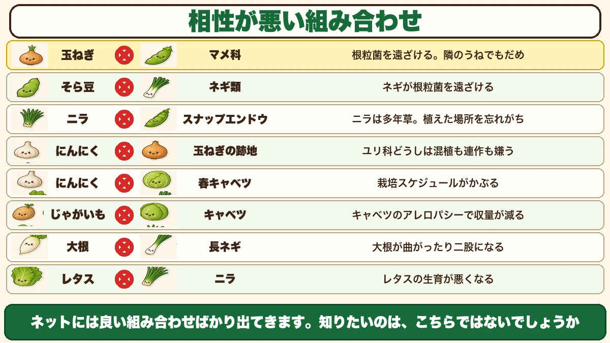
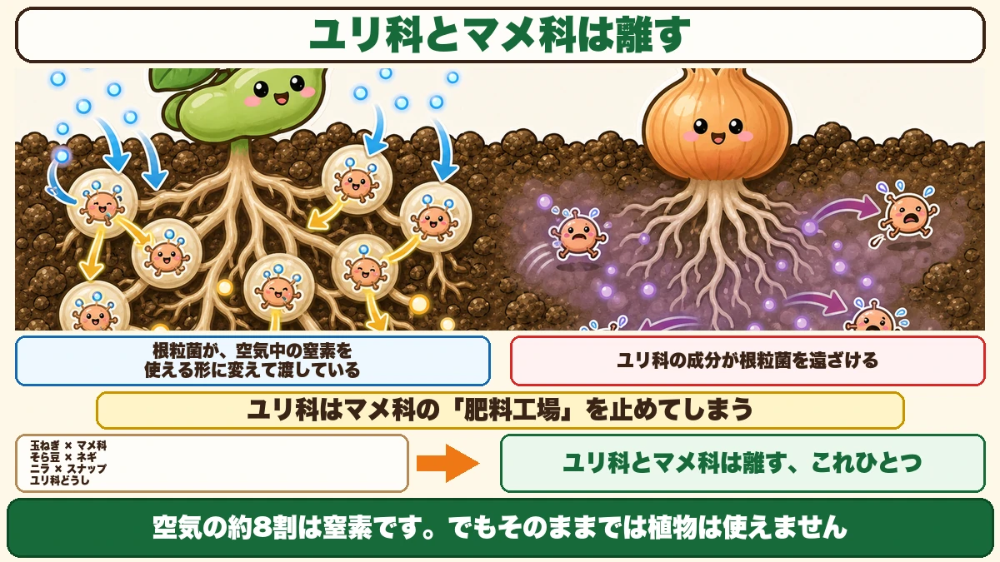
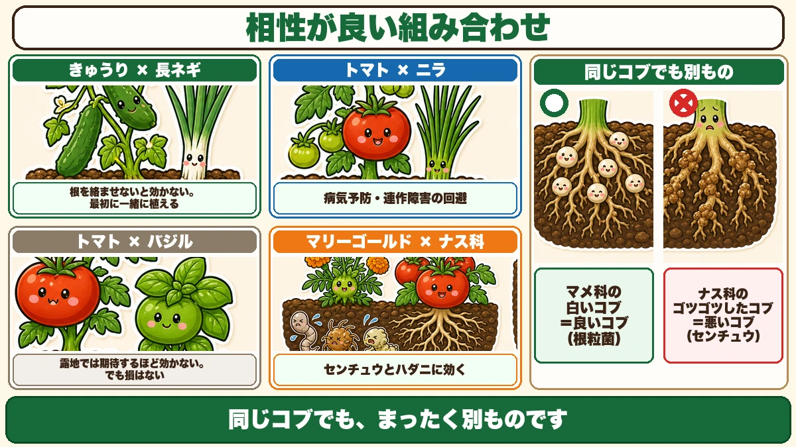
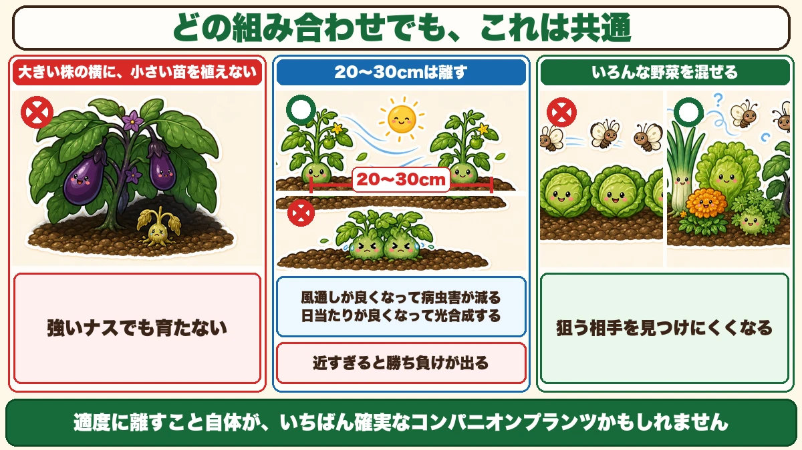

玉ねぎの隣に豆を植えてはいけません🌿 相性が悪い8つの組み合わせ

🗨️「トマトのそばにバジル、って聞いたことある」
🗨️「良い組み合わせは分かったけど、悪いのは？」
🗨️「大根が二股になるのは、なぜ？」
どうも、8150（えいこう）です🌱 家庭菜園歴8年、理科の教員免許を持っていて、有機・無農薬で野菜を育てています。
3月は、どこに何を植えるか決める月です。
そこで知っておきたいのが、野菜どうしの相性です。近くに植えると助け合うもの、じゃまし合うものがあります。これをコンパニオンプランツと言います。
ただ、調べていて思ったことがあります。
★良い組み合わせの情報は山ほどあるのに、悪い組み合わせはほとんど紹介されていない。
先に、この記事でいちばん言いたいことを言っておきます。
★玉ねぎの隣に、豆を植えてはいけません。隣のうねでもだめです。
理由がはっきりしていて、しかもその理由を知ると、★他の3つの組み合わせも同時に分かります☺️
最初に、正直なことを
★科学的に解明されたものは、少ない
この話をする前に、ひとつお伝えしておきます。
コンパニオンプランツについては、★科学的にはっきり解明されているものが少ないです。
多くは「この人がやってみたら、うまくいった」という★経験則です。私の書くことも含めて、絶対の法則ではありません。
だから、この記事では「〜と言われています」という書き方が多くなります。★歯切れが悪いように見えますが、そこは正直でいたいと思っています。
ただ、★理屈が通っているものは、やはり効きます。今日はその理屈のあるものを中心にお話しします。
★相性が悪い組み合わせ

①玉ねぎ × マメ科 ── いちばん大事
エンドウ、そら豆、スナップエンドウ。これらのマメ科の野菜と、玉ねぎは相性が悪いです。
そして★これは、混植だけの話ではありません。
★混植していなくても、近くで育てると影響が出ます。玉ねぎのうねの隣のうねでマメ科を作るのも、よくないと言われています。
対策としては、玉ねぎの隣のうねには別の野菜を植えて、★マメ科は離れたところに隔離する。
②そら豆 × ネギ類
そら豆とネギも、相性が良くありません。
★ネギには、根粒菌を遠ざける働きがあります（この根粒菌については、次の章でくわしくお話しします）。
ちなみに、★そら豆と相性が良いのはほうれん草です。ほうれん草の跡地や、うねのあいだにそら豆を植えるといいと言われています。
③ニラ × スナップエンドウ
ニラも、ネギと同じ理由でマメ科と合いません。
そして★ニラには、特有の落とし穴があります。
★ニラは多年草です。一度植えると、そこに何年も居続けます。だから★植えた場所を忘れてしまうんです。
「ここは空いているな」と思って豆をまいたら、地下にニラがいた。これはやりがちです。★ニラを植えた場所は、忘れないようにしてください。
④にんにく × 玉ねぎの跡地
にんにくは、実はコンパニオンプランツとしてとても優秀な野菜です。★植えるだけで土を消毒する働きがあると言われていて、多くの野菜と相性が良いです。
ところが、★同じ仲間とは合いません。
玉ねぎ、ねぎ、にんにく、にら。これらは全部★ユリ科です。★ユリ科どうしは、混植も連作も嫌います。
理由は、★ユリ科特有の成分が出て、それが同じユリ科の生育を邪魔するからだと言われています。
だから、★玉ねぎの跡地にんにくを植えるのは避けてください。
⑤にんにく × 春キャベツ
こちらは理由が違います。★栽培スケジュールが完全にかぶるからです。
同じ時期に、同じ場所で、同じくらいの大きさに育つ。となると、光も水も養分も取り合いになります。相性というより、単純に場所が足りません。
⑥★じゃがいも × キャベツ
これは面白い理由です。
★キャベツには、アレロパシー（多感作用）があります。
アレロパシーというのは、★植物が根や葉から出す物質で、まわりの植物の育ちを抑える働きのことです。自分の場所を確保するための、植物なりの陣取りですね。
このキャベツの働きで、★じゃがいもの生育が悪くなり、収量が減ると言われています。
⑦★大根 × 長ネギ
これは、症状がはっきりしていて分かりやすいです。
★ネギが出す成分を大根が嫌って、大根が曲がったり、二股になったりします。
大根が二股になる原因といえば、石や未熟な堆肥が有名です。でも★近くにネギがあった、というケースもあるんです。
きれいな大根が穫れない年があったら、まわりに何を植えていたか思い出してみてください。
⑧レタス × ニラ
この組み合わせは、レタスの生育が悪くなると言われています。
理由ははっきりしていませんが、覚えておくと損はありません。
★★ひとつ覚えれば、4つ分かる
マメ科の根には、コブがある
さきほどから何度も出てきた「根粒菌」の話をします。
マメ科の野菜を抜いてみると、★根に小さな白いコブがたくさんついています。
これは病気ではありません。★根粒菌という菌が住んでいる部屋です。

空気から、肥料を作る
この菌が、すごいことをします。
★空気中の窒素を取りこんで、植物が使える形に変えて、マメ科に渡しているんです。
空気の約8割は窒素です。でも、そのままでは植物は使えません。窒素肥料というのは、この使えない窒素を使える形に変えたものです。
★根粒菌は、それを土の中でやっています。
だからマメ科の野菜は、★やせた土でも育ちます。肥料が少なくても、自分で用意できるからです。前にスナップエンドウの話で「2月以降は追肥をしない」と書いたのは、これが理由です。
★ユリ科は、根粒菌を追い払う
ここでつながります。
★玉ねぎ、ねぎ、にら。これらユリ科の野菜が出す成分は、根粒菌を遠ざけると言われています。
すると、どうなるか。
- マメ科の根に、根粒菌が来なくなる
- ★マメ科は、自分で窒素を作れなくなる
- 肥料の少ない土では、育たない
つまり、★ユリ科はマメ科の「肥料工場」を止めてしまうわけです。
★覚えるのは、これひとつでいい
さきほど挙げた8つのうち、3つはこれで説明がつきます。
- 玉ねぎ × マメ科
- そら豆 × ネギ類
- ニラ × スナップエンドウ
そして4つ目のユリ科どうしも、「ユリ科は特有の成分を出す」という同じ話の延長です。
★「ユリ科とマメ科は離す」。これだけ覚えれば、半分は片づきます。
理屈が分かっていると、覚えなくても思い出せます。私はこれを知ってから、畑の設計が楽になりました。
相性が良い組み合わせ

①きゅうり × 長ネギ ── ★根を絡ませる
きゅうりの苗を植えるとき、同じ穴に長ネギを一緒に植えます。
ポイントがひとつあります。
★根を絡ませないと、効果が出ません。
だから★最初の段階で、一緒に植えることが最も重要です。あとからネギを足しても、根が絡まないので意味がありません。
ネギの根には、病気を抑える微生物がいると言われています。それをきゅうりの根のそばに置く、という考え方です。
②トマト × ニラ ── 連作障害を避ける
同じくトマトの苗と、ニラを同じ穴に植えます。こちらも★根を絡めます。
★病気の予防になり、連作障害を回避すると言われています。
トマトは、同じ場所で続けて作ると病気が出やすい野菜です。★畑が狭くてローテーションできない方は、これを試す価値があります。
③トマト × バジル ── ★正直に言うと
いちばん有名な組み合わせですね。
★バジルが水分をよく吸うので、トマトの水が減って糖度が上がる、と言われています。トマトは水を切ると甘くなる野菜なので、理屈は通っています。
ただ、正直に書きます。
★畑でやる場合は天候に左右されるので、期待するほどの効果は出ません。
雨が降れば、バジルが吸う以上に水が入ります。プランターならまだ効きますが、露地の畑では劇的には変わりません。
★相性が悪いわけではないので、やって損はありません。ただ「これで甘くなるはず」と期待しすぎないほうがいいです。
④★マリーゴールド × ナス科
これは、はっきり効きます。
マリーゴールドには、★センチュウ（線虫）を防ぐ効果があると言われています。ハダニにも効きます。
★センチュウの被害は、収穫のときに分かります。
トマトやナスを抜いてみると、★根にゴツゴツしたコブができている。あれがセンチュウの被害です。ひどくなると、水も養分も吸えなくなって育たなくなります。
さきほどのマメ科のコブは良いコブでしたが、★こちらは悪いコブです。同じコブでも、まったく別ものです。
ナス科（トマト・ナス・ピーマン・じゃがいも）のそばに、マリーゴールドを植えておく。これは私も毎年やっています。
★基本の3ルール

①大きく育った野菜の横に、新しい苗を植えない
これは相性以前の話です。
★すでに大きくなっている野菜の横に、小さい苗を植えてはいけません。
光も水も養分も、全部先住民に取られます。★ナスのような強い野菜でも、この状況では育ちません。
②★20〜30cmは離す
良い組み合わせでも、近すぎるとだめです。
★ギュウギュウに植えると、どちらかが勝って、どちらかが負けます。
目安は★20〜30cm。トマトとバジル、とうもろこしと枝豆のような定番の組み合わせでも、これくらいは離してください。
そして離すことには、別の効果もあります。
- ★風通しが良くなって、病虫害が減る
- ★日当たりが良くなって、よく光合成する
★適度に離すこと自体が、いちばん確実なコンパニオンプランツかもしれません。
③★いろんな野菜を混ぜて作る
最後は、考え方の話です。
★同じ野菜だけをずらっと並べると、それを狙う虫にとっては大きな看板になります。においも、見た目も、はっきりしているからです。
★いろんな野菜が混ざっていると、病原菌も害虫も、狙う相手を見つけにくくなります。
家庭菜園は、農家さんのように大量に同じものを作る必要がありません。★少しずつ、いろいろ作る。これが実は、無農薬にいちばん向いた作り方です。
★3月に、準備しておくこと
ネギとニラの苗は、売っていないことがある
ここが見落とされやすいところです。
★きゅうり用の長ネギ、トマト用のニラ。これらの苗は、4〜5月にホームセンターへ行っても手に入らないことがあります。
しかも困ったことに、★通常のまきどきにまくと、効果が欲しい初期の時点で苗が小さすぎるんです。育つころには、栽培が終盤になってしまいます。
★だから3月に、自分でタネから準備しておく。この記事を3月にお届けしているのは、そのためです。
タネまきのコツ
バジルやマリーゴールドは、タネから作るとかなり安く済みます。
ひとつだけ、コツがあります。
★先に水をまいてから、タネをまいてください。
タネをまいてから水をかけると、★タネが浮いて流れます。とくにバジルのような細かいタネは、きれいに片側へ寄ってしまいます。
- ポットに種まき培土を入れる
- ★底から水が出るくらい、しっかり水をやる
- 水が引いたら、タネをまく
- 軽く鎮圧して、おしまい
- ★このあとの水やりは要りません
今年の畑の、設計図を描く
この記事の要点
- ★コンパニオンプランツは科学的に解明されたものが少なく、多くは経験則
- ★ネットには良い組み合わせばかり出てくる。悪いほうを知っておく
- ★玉ねぎ × マメ科は、隣のうねでもだめ。離す
- そら豆 × ネギ類／ニラ × スナップエンドウも同じ理由
- ★ニラは多年草なので、植えた場所を忘れないこと
- ★ユリ科どうし（玉ねぎ・ねぎ・にんにく・にら）は混植も連作も嫌う
- ★じゃがいも × キャベツ … キャベツのアレロパシーで収量が減る
- ★大根 × 長ネギ … 大根が曲がったり二股になる
- ★マメ科の根のコブ＝根粒菌の部屋。★空気中の窒素を使える形に変えている
- ★ユリ科の成分は根粒菌を遠ざける＝マメ科の肥料工場を止めてしまう
- ★「ユリ科とマメ科は離す」だけ覚えれば、悪い組み合わせの半分が分かる
- きゅうり × 長ネギ、トマト × ニラは★根を絡ませる。★最初に一緒に植えないと効かない
- トマト × バジルは★露地では期待するほど効かない（が、やって損はない）
- ★マリーゴールド × ナス科はセンチュウとハダニに効く
- ★センチュウの被害＝根の悪いコブ。マメ科の良いコブとは別もの
- ★大きい野菜の横に小さい苗を植えない
- ★20〜30cmは離す。離すこと自体が風通しと日当たりを良くする
- ★いろんな野菜を混ぜると、虫や菌が狙う相手を見つけにくくなる
- ★ネギ・ニラの苗は手に入らないことがあるので3月にタネから準備する
- タネまきは★先に水をまいてから。あとからかけるとタネが浮く
全部やろうとしなくて大丈夫です。まずは紙に今年のうねを描いて、★玉ねぎと豆を離れた場所に置いてみてください。それだけで、今年の豆はよく育ちます🌿
ここまで読んでくださって、ありがとうございました。
マリーゴールドのタネ
ナス科（トマト・ナス・ピーマン・じゃがいも）のそばに植えます。センチュウとハダニに効きます。センチュウの被害は、収穫のときに根のゴツゴツしたコブで分かる。マメ科の白いコブとは、まったく別ものです。
![[商品価格に関しましては、リンクが作成された時点と現時点で情報が変更されている場合がございます。]](https://hbb.afl.rakuten.co.jp/hgb/552615f0.9cc2855e.552615f1.776f7de9/?me_id=1251188&item_id=10001783&pc=https%3A%2F%2Fthumbnail.image.rakuten.co.jp%2F%400_mall%2Fyonezawa%2Fcabinet%2Fhanatane01%2Fhanaharumaki1%2Fhitoezakikongou.jpg%3F_ex%3D240x240&s=240x240&t=picttext "[商品価格に関しましては、リンクが作成された時点と現時点で情報が変更されている場合がございます。]")

ニラのタネ（固定種）
トマトと同じ穴に植えて、根を絡ませます。病気の予防と連作障害の回避になると言われています。ただしニラは多年草なので、植えた場所を忘れないでください。近くに豆を植えると、根粒菌を追い払ってしまいます。
![[商品価格に関しましては、リンクが作成された時点と現時点で情報が変更されている場合がございます。]](https://hbb.afl.rakuten.co.jp/hgb/56eba4de.2d7c5c10.56eba4df.27ead89b/?me_id=1430776&item_id=10000048&pc=https%3A%2F%2Fthumbnail.image.rakuten.co.jp%2F%400_mall%2Fg-tane%2Fcabinet%2Fshohin%2Fyousai%2F01006%2Fy0101007001001_r01.jpg%3F_ex%3D240x240&s=240x240&t=picttext "[商品価格に関しましては、リンクが作成された時点と現時点で情報が変更されている場合がございます。]")
ねぎのタネ
きゅうりと同じ穴に植えます。大事なのは、最初に一緒に植えること。あとから足しても根が絡まないので効きません。4〜5月に苗を買おうとしても手に入らないことがあるので、3月にタネから育てておきます。
![[商品価格に関しましては、リンクが作成された時点と現時点で情報が変更されている場合がございます。]](https://hbb.afl.rakuten.co.jp/hgb/552615f0.9cc2855e.552615f1.776f7de9/?me_id=1251188&item_id=10001752&pc=https%3A%2F%2Fthumbnail.image.rakuten.co.jp%2F%400_mall%2Fyonezawa%2Fcabinet%2Ftane01%2F1015negi%2Ftane-otegarukonegi.jpg%3F_ex%3D240x240&s=240x240&t=picttext "[商品価格に関しましては、リンクが作成された時点と現時点で情報が変更されている場合がございます。]")
バジルのタネ
トマトのそばに植えると糖度が上がると言われています。正直に書くと、露地では雨が降るので期待するほどの効果は出ません。ただ相性が悪いわけではないので、やって損はありません。プランターならもう少し効きます。
![[商品価格に関しましては、リンクが作成された時点と現時点で情報が変更されている場合がございます。]](https://hbb.afl.rakuten.co.jp/hgb/552615f0.9cc2855e.552615f1.776f7de9/?me_id=1251188&item_id=10000735&pc=https%3A%2F%2Fthumbnail.image.rakuten.co.jp%2F%400_mall%2Fyonezawa%2Fcabinet%2Ftane01%2Fherb_sakata%2Fbasil-mail.jpg%3F_ex%3D240x240&s=240x240&t=picttext "[商品価格に関しましては、リンクが作成された時点と現時点で情報が変更されている場合がございます。]")
種まき培土
タネまきのコツをひとつ。先に水をまいてから、タネをまいてください。逆にすると、とくにバジルのような細かいタネは浮いて片側へ流れます。底から水が出るくらいやって、水が引いてからまく。まいたあとの水やりは要りません。
![[商品価格に関しましては、リンクが作成された時点と現時点で情報が変更されている場合がございます。]](https://hbb.afl.rakuten.co.jp/hgb/55e75fe5.20db4cd1.55e75fe7.d1ec32cc/?me_id=1194164&item_id=10000034&pc=https%3A%2F%2Fthumbnail.image.rakuten.co.jp%2F%400_mall%2Fgardening%2Fcabinet%2Fyoudosenyoudo%2Fimg57203270.jpg%3F_ex%3D240x240&s=240x240&t=picttext "[商品価格に関しましては、リンクが作成された時点と現時点で情報が変更されている場合がございます。]")
あわせて読みたい